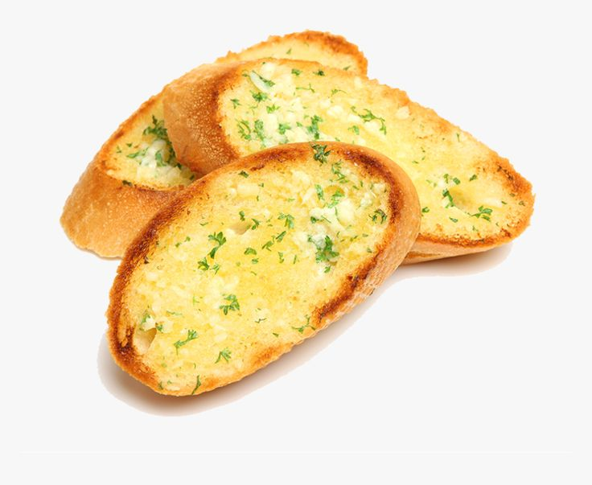

Garlic Bread

Description:
Garlic bread (also called garlic toast) consists of bread (usually a baguette, sour dough, or bread such as ciabatta), topped with garlic and occasionally olive oil or butter and may include additional herbs, such as oregano or chives. It is then either grilled until toasted or baked in a conventional or bread oven.
Ingredients:
- Bread
- Butter: 1/2 cup of butter, but you can also get away with using 1/3 cup
- Garlic: fresh garlic cloves (rather than garlic powder) are KEY for that true garlic flavor. The minced garlic gets roasted to perfection in the oven.
- Herbs & Spices: instead of Italian seasoning we’re adding a little fresh parsley and sea salt to bring it all together. Feel free to garnish with extra parsley or chives, too!
Steps:
- Prep your pan & bread. Line a large baking sheet with parchment paper or tinfoil, slice your bread in half lengthwise, and place the bread cut side up on the baking sheet.
- Make the garlic butter. In a small bowl mix the herbs and salt together with the softened butter. Spread it evenly over the top of the bread halves.
- Bake & serve. Bake the bread for 10-15 minutes at 425 degrees F until it’s slightly golden brown on the edges. If you’re adding cheese, add it in the last 2 minutes of baking. Then cool, slice into 1-inch pieces, and devour!